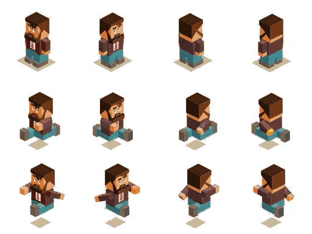

A box paints its background inside its padding edge, and
background-position decides which part of the picture lands in there.
Put those two facts together and one file becomes a hundred pictures: make the box
exactly one cell, then slide the background by whole cells. The two files next to
this page hold 102 pictures between them — twelve animation frames and ninety
icons — and no element on this page is an <img>.
Both sheets were re-cut onto an exact grid, so that one cell is a whole number of pixels. The red square marks one cell of the first sheet: everything below is that square, moved around.

character.png — 512 × 384, twelve frames of 128 × 128icons.png — 960 × 864, ninety icons of 96 × 96The grid is two repeating-linear-gradient layers drawn by this
page, not pixels saved into the file: --cell: 96px is a number we chose, and
the browser draws a line every 96 px on top of the picture.
Six identical boxes, six different pictures, one file, one declaration different. Nothing is cropped, nothing is copied: the background is simply slid further up and to the left.
.frame { width: 128px; height: 128px;
background: url("character.png") no-repeat var(--pos); }
The numbers are negative on purpose. The picture slides up and left
behind the box, so the cell you want moves into view. 0 -256px is
the third row down, second column in — the box never moves.
repeatno-repeatLeave out no-repeat and the sheet tiles across the box — the
neighbours on the shelf come along. A sprite box is always
no-repeat, because the file is a shelf, not a texture.
An animation is nothing but a list of background-position
values. steps(4) is the timing function that makes a strip look like a
sprite rather than a slow slide: four frames, no blending, no in-between. The row is
4 × 128px = 512px wide, and that is how far the background travels.
.hero { --s: 1; --c: 0; --r: 0;
width: calc(128px * var(--s)); height: calc(128px * var(--s));
background: url("character.png") no-repeat;
background-size: calc(512px * var(--s)) calc(384px * var(--s));
animation: face 1.2s steps(4) infinite; }
@keyframes face {
from { background-position: 0 calc(var(--r) * -128px * var(--s)); }
to { background-position: calc(-512px * var(--s))
calc(var(--r) * -128px * var(--s)); } }
The row and the column are indices here, not pixel offsets —
.r2 { --r: 1; } — so one set of keyframes drives three different
animations out of one file, and --s scales the frames and the travel
together. Count the steps wrong and the frames drift inside the cell; count them
right and each one lands exactly on it.
The fourth box runs down the sheet instead: same idea,
@keyframes action with steps(3), and the travel on the
other axis — calc(-384px * var(--s)), three rows of three. The axis is
just an axis.
Every icon here is the same 44 KB file. A cell is 96 px, so an icon's
position is column × −96px and row × −96px — the arithmetic a
build tool would normally do for you when it packs the sheet.
.ic { width: 48px; height: 48px;
background: url("icons.png") no-repeat; background-size: 480px 432px;
background-position: calc(var(--c) * -48px) calc(var(--r) * -48px); }
Hover one. The picture becomes a different cell of the same file — no
request, nothing to wait for. That is where sprites came from: a button's normal and
hover state in one download, so the second state was in the cache before the pointer
ever arrived. The names above come from title in the markup, because a
background image cannot carry text of its own.
The cell and the file scale together, so a single number resizes every frame. You never resize a frame — you resize the sheet and let each window follow.
.ic { --s: 0.5; width: calc(96px * var(--s)); height: calc(96px * var(--s));
background-size: calc(960px * var(--s)) calc(864px * var(--s));
background-position: calc(var(--c) * -96px * var(--s))
calc(var(--r) * -96px * var(--s)); }
.s24 { --s: 0.25; } .s48 { --s: 0.5; } .s72 { --s: 0.75; }
— 24, 48 and 72 px out of the same 960 × 864 file. The browser resamples the whole
sheet once and every window into it stays sharp, which is why one file serves a 24 px
toolbar and a 72 px card equally well.
The little one at the end is the animation at a quarter size:
.hero.mini { --s: 0.375; } — a 48 px sprite, the same keyframes, the same
file. Geometry and motion are the same calc(), so they cannot disagree.
icons.png is 44 KB, fetched once, and the browser draws all
ninety out of its own image cache.currentColor. An icon that carries meaning
still needs a real word in the markup.